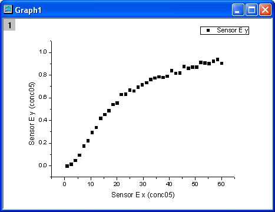
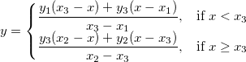
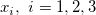
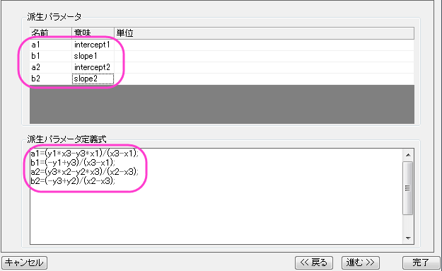
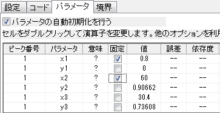
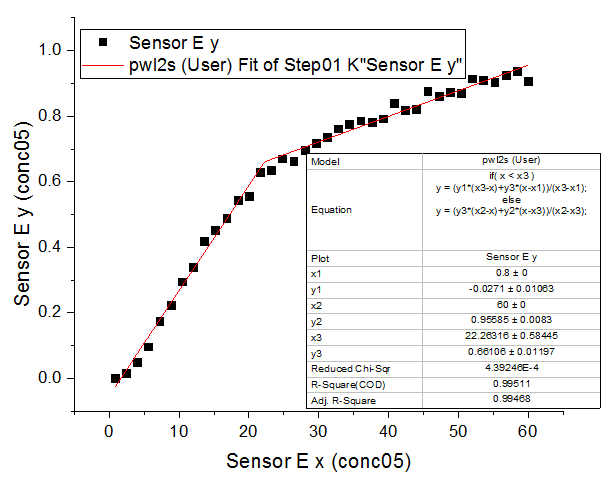

区分線形関数を使ってフィットする
Fitting-Piecewise-Linear
概要
このチュートリアルでは2つの線形区分から成る区分線形関数を定義してデータのフィットを実行し、結果から求められる交点位置を計算する方法を示します。
必要なOriginのバージョン:Origin 8.6 SR0以降
学習する項目
このチュートリアルでは、以下の項目について解説します。
- 区間(条件)のフィット関数を定義する
- パラメータの自動初期化
- 区間フィットの交差位置を計算する
サンプルとステップ
データのインポート
- 新しいワークブックを用意します。ヘルプ: フォルダを開く: サンプルフォルダを選択して、サンプルフォルダを開きます。このフォルダ内のCurve FittingサブフォルダにあるStep01.dat ファイルを探します。空のワークシートにファイルをドラッグアンドドロップしてインポートします。
- Sensor E x列（列J） を右クリックし、コンテキストメニューから列XY属性の設定：X列を選びます。Sensor E y列を選択し、メニューから作図： シンボル図：散布図 と操作します。グラフは次のようになります。
- 
フィット関数を定義する
上記のグラフから、曲線は2つの部分に分けられる部分からできていることが分かります。これは区分線形関数を使ってフィットすることができます。この関数は次のように表現できます。
- 
x1とx2は曲線の終着点を示すｘ値で、フィット中に固定されます。x3は2つの部分の交点のx値を示しています。そしてy1、y2、y3は地点でのy値をそれぞれ表しています。
フィット関数は、フィット関数ビルダーを使用して定義できます。
- メニューから、ツール：フィット関数ビルダーを選択します。
- フィット関数ビルダーダイアログの処理のゴールページで進むのボタンをクリックします。
- 関数名と関数形式のページでは、関数カテゴリーの選択ドロップダウンリストでUser Definedを選択し、関数名をpwl2sとします。また、関数形式はOrigin Cにします。それから、進むボタンをクリックします。
- 変数とパラメータページでは、パラメータとして、x1,y1,x2,y2,x3,y3 と入力します。進むボタンをクリックします。
- Origin Cフィット関数のページで、関数内容編集ボックスの右上にある、
 ボタンをクリックしてコードビルダを開き、フィット関数を以下のように定義します。
ボタンをクリックしてコードビルダを開き、フィット関数を以下のように定義します。
if( x < x3 )
y = (y1*(x3-x)+y3*(x-x1))/(x3-x1);
else
y = (y3*(x2-x)+y2*(x-x3))/(x2-x3);
コンパイルボタンをクリックして関数内容をコンパイルします。NLSFに戻るボタンをクリックします。進むボタンをクリックします。
- パラメータ初期化ルーチンページでは、初期化コード編集ボックスの右にあるボタンをクリックしてフィットパラメータの初期化をコードビルダで定義します。
int n1, n2, n3;
x_data.GetMinMax( x1, x2, &n1, &n2 );
x3 = x1 + (x2 - x1)/2;
y1 = y_data[n1];
y2 = y_data[n2];
vector vd;
vd = abs( x_data - x3 );
double xta, xtb;
vd.GetMinMax( xta, xtb, &n3 );
y3 = y_data[n3];
コンパイルボタンをクリックしてコンパイルします。NLSFに戻るボタンをクリックします。完了ボタンをクリックします。
交点と傾きとなる派生パラメータを定義する
関数を定義する手順の途中でも、追加で派生パラメータ、例えば傾きや交点となる値を定義できます。これらの値はフィットの処理が完了した後の関数パラメータから計算されます。
- <<戻るボタンを2回クリックして変数とパラメータページに戻ります。そこで派生パラメータのボックスにa1,b1,a2,b2 と入力します。
- 進むボタンを4回押して派生パラメータページに進みます。上の表の意味列を入力し、下の派生パラメータ定義式には次の数式を入力して完了ボタンをクリックします。
a1=(y1*x3-y3*x1)/(x3-x1);
b1=(-y1+y3)/(x3-x1);
a2=(y3*x2-y2*x3)/(x2-x3);
b2=(-y3+y2)/(x2-x3);

曲線をフィットする
- 解析：フィット：非線形曲線フィットをメニューから選択します。NLFitダイアログで、設定：関数選択を選び、カテゴリドロップダウンリストからUser Definedを選びます。そして関数ドロップダウンリストではpwl2sを選びます。
- NLFitダイアログでパラメータタブを選択し、このパラメータ、x1とx2を下図のように固定します。

- フィットボタンをクリックして、曲線をフィットします。
フィット結果
フィット曲線のグラフは次のようになります。
- 
フィットパラメータは以下の通りです。
| パラメータ
|
値
|
標準誤差
|
| x1
|
0.8
|
0
|
| y1
|
-0.0271
|
0.01063
|
| x2
|
60
|
0
|
| y2
|
0.95585
|
0.0083
|
| x3
|
22.26316
|
0.58445
|
| y3
|
0.66106
|
0.01197
|
| a1
|
-0.05275
|
0.01123
|
| b1
|
0.03206
|
8.7153E-4
|
| a2
|
0.48715
|
0.01664
|
| b2
|
0.00781
|
3.86455E-4
|
この2つの区分の交点は(22.26316, 0.66106)となります。
Note：区分線形関数で2つ以上の区分にフィットする場合も同様の手順で行えます。